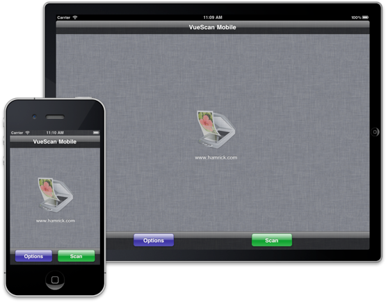

Download on the App Store
Have a Question? Send us an email!
Follow Us On Twitter


VueScan Mobile is a powerful, easy-to-use app that lets you use your WiFi printer/scanners from HP, Epson, and Canon on your iOS Device.
Accessing your WiFi enabled scanner has never been easier. VueScan Mobile allows you to seamlessly scan documents and photos straight to your iPhone, iPad, or iPod Touch from HP, Canon, and Epson WiFi printer/scanners. In addition to sending via Email and saving to the Photos App, Vuescan Mobile allows you to save scanned images to your favorite iOS apps that can open PDF or JPEG files such as iBooks, Dropbox, GoodReader, Evernote, etc. You can see if your scanner will work with VueScan Mobile by reviewing the supported scanner list below. You can also test your WiFi enabled scanner with the Mac OS X version of VueScan. Note that USB connected scanners are currently not supported.
VueScan Mobile uses the Wi-Fi connection on your iOS device to find scanners connected to the same Wi-Fi network. If the scanner has a document feeder, VueScan first checks to see if there is a document in the feeder, otherwise it scans from the flatbed.
In addition to sending via e-mail and saving to the Photos App, VueScan Mobile allows you to save scanned images to your favorite iOS apps that can open PDF or JPEG files such as iBooks, Dropbox, GoodReader and Evernote.
“We are excited to bring VueScan Mobile to the App Store,” said Ed Hamrick, President of Hamrick Software. “The VueScan Mobile App makes scanning extremely convenient. Simply press the green Scan button and, in a few seconds, the document will appear on your iPad, iPhone or iPod touch."
The VueScan Mobile App is available for $9.99 (£6.99) from the App Store on iPad, iPhone and iPod touch, or at www.itunes.com/appstore.